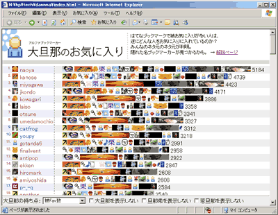
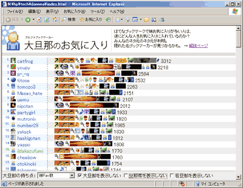
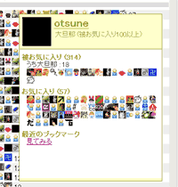

「大旦那のお気に入り」公開
はてなブックマークで被お気に入りが多い人は、逆にどんな人をお気に入りに入れているのか？
みんなのネタ元のネタ元が今、判明。隠れた名ブックマーカーが見つかるかも。
何ができる？
はてなブックマークでお気に入りを探すとき、ひとつの目安になるのが 被お気に入り登録数ランキング です。ただ、このページからは、被お気に入り登録数が多い人しか知ることができません。
では、大旦那（=被お気に入り登録数100以上）は、どんな人をお気に入りに入れているのでしょうか。人気の人のお気に入りを集計すると、また違った人がリストにあがってくるはず。
このツールは大旦那のお気に入りを集計し、ランキング形式で表示します。さらに、ブックマーカのお気に入りをリンクのようにたどっていって、いろんな人のブックマークを覗き見することができます。隠れた名ブックマーカーを探し出すのはあなたです。
使い方
http://tech.nitoyon.com/javascript/application/alphavorite/ を開きます。
- IE6, FireFox 1.5 でテストしてます
- ちょっと重いかも
ページを開くと、大旦那のお気に入りデータを元に集計を行い、順位が表示されます。デフォルトでは、被お気に入り登録数に応じた持ち点でスコアリングします。
例えば、私(id:nitoyon)をお気に入りに入れている大旦那は id:naoya 氏と id:wacky 氏です。この場合、両氏の被お気に入り数 1030 と 155 を足した 1185 が私のスコアになります。
集計結果がこちらです。

大旦那がお気に入りに登録している人のランキングを出してみても、結局は大旦那がトップに表示されてしまうようです。このままでは、あまり面白みがありません。ページ下の「大旦那を表示しない」にチェックを入れてみます。

するとどうでしょう、大旦那が一覧から消えて、少し通好みのブックマーカが出てきましたね。もっと通好みのブックマーカを見つけたい場合は、「旦那衆を表示しない」にチェックを入れてみましょう。旦那衆は被お気に入り登録数が30以上の人です。つまり、被お気に入りが29人以下で、かつ、大旦那に好かれている人を調べることができます。
旦那衆などの用語について簡単にまとめておきます。
- 大旦那：被お気に入り登録数 100以上
- 旦那衆：被お気に入り登録数 30～99
- 若旦那：被お気に入り登録数 25～29
集計方法
集計方法には３通りあります。
| 名前 | 詳細 |
|---|---|
| 各1pt | 大旦那からの被お気に入り１件につき１ポイント入ります。簡単にいえば、大旦那からの被お気に入り登録数です |
| 被Fav数 | 大旦那からの被お気に入り１件につき大旦那の被お気に入り登録数が得点として加算されます。大旦那の背後にいる一般市民からの支持も得ている、という考え方です。 |
| 被Fav数/Fav数 | 大旦那の被お気に入り１件につき大旦那の「被お気に入り登録数 / お気に入り登録数」が得点として加算されます。大旦那の背後にいる一般市民からの支持票を、大旦那が気に入ってる人に平等に分け与えた、という考え方です。被Fav が 690 もあるのに、お気に入りが 4 人しかいない id:jkondo 氏は、顔が横に間延びしてしまっていて不気味です... |
ブラウジング

ブックマーカのアイコンをクリックすると、情報窓が表示さます。窓の中にはどの大旦那にお気に入り登録されているかや、お気に入りの一覧が表示されます。
「最近のブックマーク」の下の「見てみる」リンクをクリックすると、最近のブックマークを 情報窓内で見ることができます。ブックマークの傾向を覗き見して、いざ気に入った人が現れたら、情報窓の上のアイコンか id をクリックして、はてブのページを開いてお気に入りに追加してみましょう。
おまけ
実はサーバーレスで動いてるんですよ、ってのがウリなんですが、技術的な詳細は、また後日解説する...かもしれません。
(2006.11.8追記) 大旦那のお気に入りの裏側 で解説してます。